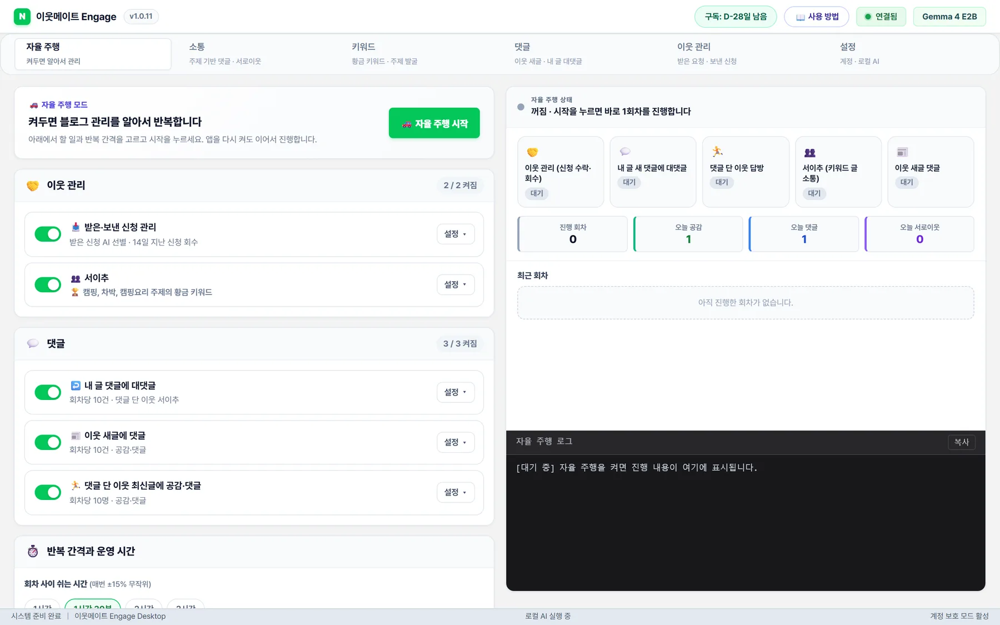
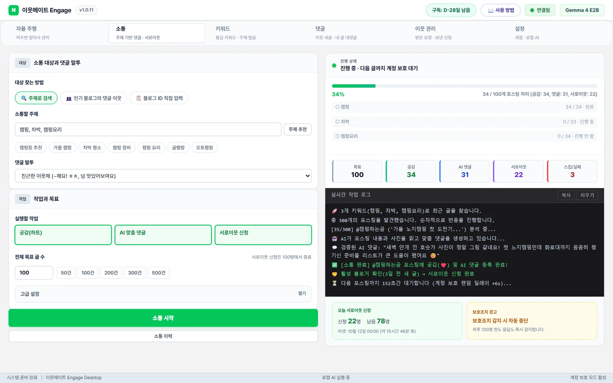
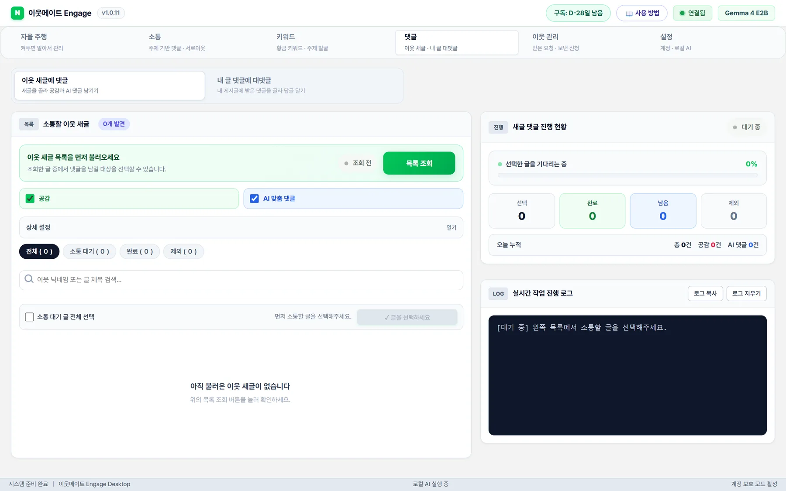
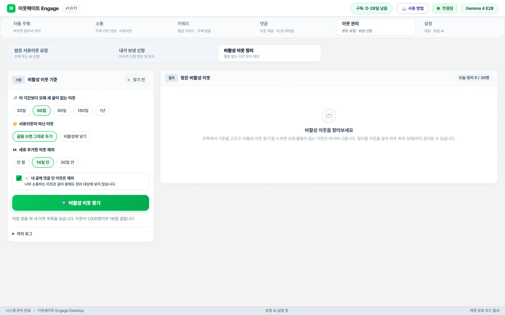
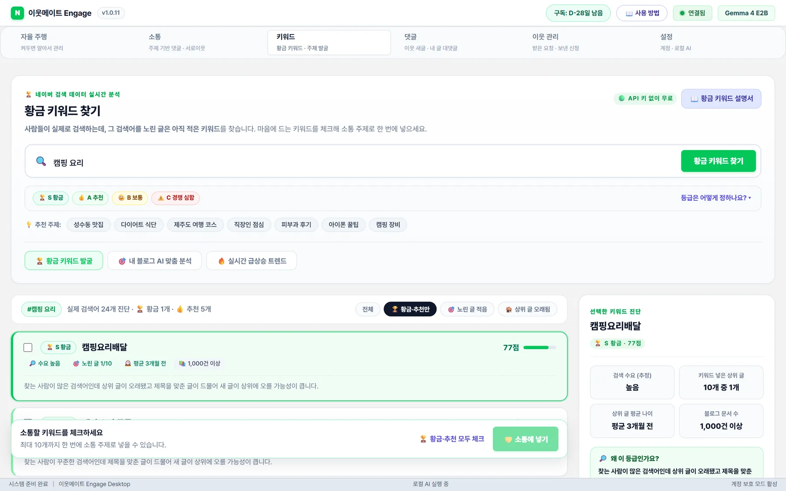
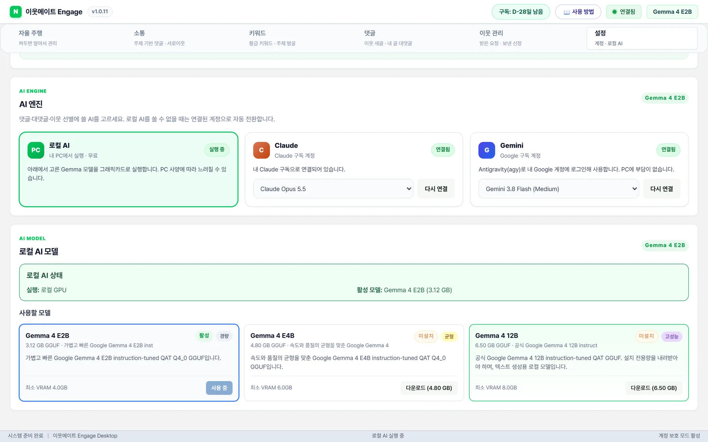

육아 글아기 어린이집 물컵, 아기컵 구분과 적응 준비
👶
빨대컵과 열린 컵의 차이점을 설명해주시니 헷갈렸던 부분이 많이 정리되네요. 처음에는 어른이 받쳐주면서 연습하는 과정이 필요하다는 점이 현실적으로 와닿아요.
빨대컵 · 열린 컵받쳐 주며 연습
매일 반복하는 자율 주행부터 글을 읽고 쓰는 AI 댓글, 원하는 블로거와의 소통, 이웃 정리, 황금 키워드까지. 9가지 기능을 하나씩 자세히 보여 드립니다.
켜 둔 일을 회차마다 순서대로 처리하고, 쉬는 시간이 지나면 다음 회차를 시작합니다. 앱을 껐다 켜도 켜 둔 상태가 이어지고, 운영 시간 밖에는 쉬었다가 아침에 다시 시작합니다.

AI가 신청자 블로그를 보고 진짜 블로거만 수락, 광고·매크로는 거절합니다. 전부 수락으로도 바꿀 수 있습니다.
7·14·30일 동안 받지 않은 신청을 하루 한 번, 최대 30건 취소해 새 신청이 막히지 않게 합니다.
60·90·180일 넘게 새 글이 없는 이웃을 하루 최대 30명 정리합니다. 기본은 꺼져 있습니다.
내 블로그 주제(최대 10개)를 넣으면 회차마다 주제를 돌아가며 아직 안 쓴 S·A등급 키워드를 찾아 그 글에 소통합니다.
직접 넣은 키워드(최대 20개)를 회차마다 하나씩 차례로 씁니다.
공감, AI 댓글, 서로이웃 신청을 각각 켜고 끌 수 있습니다. 처음엔 20개를 추천합니다.
이웃이 새로 올린 글에 회차당 5~30건 공감과 AI 댓글을 남깁니다. 이웃 관계를 지키는 기본 작업입니다.
최근 글 10개에서 아직 답하지 않은 댓글에 회차당 5·10·20건 AI 답글을 답니다.
내 글에 댓글을 단 이웃의 최신 글에 공감·댓글로 답례합니다. 한 명당 20~40초씩 쉬어 갑니다.
1~3시간. 매번 ±15% 무작위로 바뀌어 기계처럼 보이지 않습니다. 1시간 30분 추천.
정한 시간(한국 시간)에만 움직입니다. 사람이 활동하는 9시~23시를 추천합니다.
AI가 본문과 사진을 읽고 그 글에서만 나올 수 있는 이야기로 댓글을 씁니다. 올리기 전에 한 번 더 검사해서 엉뚱하거나 판에 박힌 댓글은 다시 쓰게 합니다. 받는 사람이 ‘진짜 읽었구나’ 느끼니 답방과 서로이웃 수락으로 이어집니다.
어느 글에나 붙일 수 있는 문장은 받는 사람도, 네이버도 바로 알아봅니다.
‘찰랑 소주 특징과 맛’ 글을 읽고 쓴 댓글. 본문에 나온 원료와 특징을 정확히 짚었습니다.
빨대컵과 열린 컵의 차이점을 설명해주시니 헷갈렸던 부분이 많이 정리되네요. 처음에는 어른이 받쳐주면서 연습하는 과정이 필요하다는 점이 현실적으로 와닿아요.
앉을 때 엉덩이 바깥쪽이 욱신거리는 증상 때문에 신경 쓰이셨군요. 중둔근이나 소둔근 힘줄이 지나가는 부위의 자극이 크셨을 것 같아요.
다이치노 우동에서 멸치가 반투명할 정도였다니 신기하네요. 직접 드셔보신 생생한 느낌이 전해져서 다음에 가면 우동 면발에 집중해서 먹어보고 싶어졌어요.
공은태 씨가 결국 영업기획실 차장으로 승진했다는 부분이 인상 깊어요. 돈이 아닌 노력으로 얻은 성취라는 점을 보여주어 보는 사람 마음까지 뿌듯하게 만드네요.
자유빵집에서 소금빵 같은 빵들이 종류별로 많아 보여서 구경하는 재미가 컸겠어요. 다음에 춘천에 가게 되면 꼭 들러보고 싶네요.
방문한 이웃포스팅 잘 보고 갑니다! 서이추 감사해요 :) 늦어도 답방 꼭 갑니다~
이웃메이트 AI 답글방문해주셔서 감사드리고, 서이추 수락해주셔서 기뻐요. 시간 되실 때 편하게 놀러 오세요 😊
위 댓글은 모두 이웃메이트가 실제 블로그 글을 읽고 작성해, 아래 검사를 통과한 댓글입니다.
댓글과 대댓글은 모두 등록 전에 검사를 거칩니다. 걸리면 무엇이 문제인지 알려 주고 다시 쓰게 하고, 세 번 안에 통과하지 못하면 아예 달지 않습니다. 이상한 댓글을 다느니 건너뛰는 게 낫기 때문입니다.
글에서 다룬 내용은 Unity DOTS와 Netcode for Entities를 사용한 3D 멀티플레이어 슈팅 게임의 아키텍처와 성능 최적화에 관한 내용입니다.
답글이 아니라 글 설명 · 상대가 한 말에 답하지 않음연휴가 계속되니 블로그 들어오는 게 쉽지 않다는 말씀, 공감합니다. 그래도 꾸준히 봐주셔서 힘이 나네요.
AI 맞춤 댓글, AI + 내 문구 섞기, 내 문구만 중에서 고릅니다. 내 문구는 최대 50줄, {닉네임}은 상대 닉네임으로 바뀝니다.
글쓴이에게만 보이는 댓글로 남길 수 있습니다. 비밀댓글을 막아 둔 글은 알아서 건너뜁니다.
서로이웃을 신청할 때 방금 읽은 글 주제를 넣어 인사말을 새로 씁니다. 매번 같은 인사말을 보내지 않습니다.
최근 쓴 댓글과 비슷하거나 같은 말투로 끝나면 다시 씁니다. 이미 소통한 글은 다시 찾아가지 않습니다.
본문 글뿐 아니라 사진도 보고 댓글을 씁니다. 사진 위주의 글에도 어울리는 댓글이 나옵니다.
자율 주행과 별개로, 지금 바로 정한 대상과 소통하고 싶을 때 씁니다. 새 이웃을 늘리는 데 가장 효과적인 메뉴입니다.

‘맛집, 육아, 캠핑’처럼 주제를 넣으면 최근 글을 찾아 소통합니다. [주제 추천]을 누르면 내 블로그에 맞는 주제를 골라 줍니다.
같은 주제 인기 블로그를 최대 5곳 넣으면, 그 블로그에 댓글을 단 이웃들을 찾아갑니다. 소통에 적극적인 사람들이라 서로이웃 수락률이 높습니다.
소통할 블로그를 최대 500곳 넣습니다. TXT·CSV 파일로 불러올 수도 있고, 각 블로그의 최신 글에 소통합니다.
소통은 주고받을 때 이어집니다. 내 글에 달린 댓글에 답하고, 댓글 단 이웃의 글에 찾아가는 일까지 AI가 챙깁니다.
[목록 조회]로 이웃이 새로 올린 글을 불러와 고르면, 하나씩 읽고 공감과 댓글을 남깁니다. 이미 소통한 글은 표시됩니다.
최근 글 5~30개에서 댓글을 모아, 댓글 내용에 맞는 답글을 답니다. 이미 답한 댓글은 다시 하지 않습니다.
댓글 단 이웃의 최신 글에 공감·댓글로 답례하고, 아직 이웃이 아니면 서로이웃도 신청합니다. 답방 댓글은 비밀댓글로도 남길 수 있습니다.

이웃 5천 명이어도 글을 안 쓰는 이웃뿐이면 방문자도 댓글도 늘지 않습니다. 이웃메이트는 지금 활동하는 블로거만 남기고 들입니다.
신청자 블로그를 읽고 진짜 블로거는 수락, 광고·매크로는 거절합니다. 전체·수락·거절 수가 실시간으로 보입니다.
정한 기간(예: 14일)보다 오래 수락되지 않은 신청을 한 번에 취소해, 대기 신청이 쌓여 새 신청이 막히는 일을 막습니다.
새 글이 없는 기간(30일~1년), 서로이웃이 아닌 이웃 포함 여부를 고르면 이웃 1,000명도 몇 초 만에 찾습니다. 새로 추가한 이웃과 내 글에 댓글 단 이웃은 지킵니다.
정리는 내가 체크하고 확인한 이웃만 합니다. 앱이 마음대로 지우지 않습니다.

사람들이 실제로 검색하는데 노린 글은 아직 적은 키워드가 ‘황금 키워드’입니다. 글감으로 쓰면 상위 노출에 유리하고, 그 키워드로 글을 쓰는 블로거는 나와 관심사가 같은 최고의 이웃 후보입니다.
‘캠핑 요리’처럼 관심 주제를 넣으면 10~20초 만에 네이버 자동완성의 실제 검색어를 모아 진단합니다. API 키 없이 무료입니다.
검색 수요가 있고, 제목에 그 검색어를 넣은 상위 글이 적고, 상위 글이 오래됐을수록 높은 등급입니다.
마음에 드는 키워드를 체크해 [소통에 넣기]를 누르면, 그 키워드로 글을 쓴 블로거에게 공감·AI 댓글·서로이웃 신청을 이어서 합니다.

지금 뜨는 검색어, 네이버 쇼핑 10개 분야의 인기 키워드, 이번 달에 많이 찾는 주제를 한 창에서 보여 줍니다. 누르면 바로 황금 키워드를 찾습니다.
내 최근 글의 주제를 읽고, 내 블로그와 잘 맞는 키워드와 소통 대상을 추천합니다.
황금·추천만, 노린 글 적음, 상위 글 오래됨만 골라 볼 수 있고, 키워드를 누르면 상위 글 분석이 보입니다.
보호조치는 대개 ‘기계 같은 패턴’에서 시작됩니다. 너무 빠르고, 너무 일정하고, 너무 많고, 같은 말을 반복할 때. 이웃메이트는 그 반대로 움직입니다.
글 사이에 무작위로 쉬고, 10건마다 10~20분 휴식합니다. 자율 주행 회차 간격도 매번 ±15% 바뀝니다.
랜덤 딜레이 + 묶음 휴식공감·댓글·서로이웃 신청이 하루 한도에 닿으면 다음 날까지 알아서 쉽니다.
공감 200 · 댓글 100 · 신청 100네이버가 보안 확인이나 자동입력 방지를 띄우면 그 순간 모든 작업을 멈춥니다. 무리해서 밀어붙이지 않습니다.
보호조치 감지 → 자동 중단휴대폰 네이버 앱으로 QR을 찍어 로그인합니다. 비밀번호는 앱을 거치지 않고, 로그인 정보는 내 PC에만 남습니다.
비밀번호 저장 안 함모든 댓글은 그 글을 읽고 새로 씁니다. 최근 쓴 댓글과 비슷하면 다시 쓰고, 이미 소통한 글은 다시 가지 않습니다.
복붙 댓글 0개운영 시간(예: 9시~23시)에만 움직이고, 밤에는 쉬었다가 아침에 다시 시작합니다.
운영 시간 · 휴식 시간 설정계정 길들이기 노하우 — 새 계정이나 오래 쉬던 계정은 처음 며칠간 하루 서로이웃 30~50명으로 시작해 조금씩 늘리세요. 프로그램 기본값은 이 원칙에 맞춰져 있어, 건드리지 않고 써도 안전한 쪽으로 동작합니다.
댓글 AI를 클라우드 API로 돌리면 쓸 때마다 요금이 쌓입니다. 이웃메이트는 Google Gemma 4 모델을 내 PC에서 직접 돌려, 아무리 많이 써도 추가 요금이 없습니다.
이미 Claude나 Gemini 구독이 있다면 버튼 한 번으로 연결해 쓸 수 있습니다. 댓글이 가장 자연스럽고 PC에 부담이 없으며, 구독 요금 안에서 쓰므로 건당 요금이 없습니다.

누구에게 서로이웃을 신청했는지, 어느 글에 어떤 댓글을 달았는지, 누구를 수락하고 정리했는지. 자율 주행 화면의 [📥 엑셀 다운로드] 한 번이면 시트별로 정리된 파일이 내려받아집니다.
오늘 · 최근 7일 · 최근 30일 · 전체 중에서 고르세요. 첫 시트에 날짜별 공감·댓글·서이추·대댓글 건수와 합계가 나옵니다.
블로그 주소와 글 주소가 링크로 들어 있어, 엑셀에서 눌러 내가 단 댓글을 바로 확인할 수 있습니다. 첫 줄 고정과 필터도 걸려 있습니다.
댓글을 건너뛴 글, 서이추가 안 된 블로그, 같은 댓글이라 답하지 않은 대댓글까지 이유와 함께 남습니다.
기간만 고르세요. 기능 제한도, AI 사용료도 없습니다. 먼저 3일 무료 체험으로 확인해 보세요.
한 달 써 보고 결정
월 8,967원 · 10% 할인
월 7,417원 · 25% 할인
원하는 기간을 남겨 주시면 결제 방법을 안내하고, 확인되는 대로 이용권 키(MATE-XXXX-XXXX-XXXX)를 보내 드립니다. 앱의 [이용권 관리]에 붙여넣으면 바로 이어서 쓸 수 있습니다.
비슷한 이웃 관리 프로그램은 월 19,000~30,000원입니다 (2026년 10월 크몽 판매 제품 기준). 무료 체험은 PC당 한 번입니다.
설치 파일 하나로 끝납니다. 업데이트도 알아서 받아 옵니다.
설치 파일을 실행하면 바로 설치됩니다. 이메일로 계정을 만들면 3일 무료 체험이 시작됩니다.
휴대폰 네이버 앱으로 화면의 QR을 찍으면 연결 끝. 한 번 연결하면 계속 유지됩니다.
내 PC에 맞는 Gemma 모델을 버튼 한 번으로 받거나, 쓰던 Claude·Gemini 구독을 연결하세요.
어떤 도구도 보호조치를 100% 막는다고 약속할 수는 없습니다. 대신 이웃메이트는 보호조치를 부르는 패턴(빠른 속도, 일정한 간격, 과도한 건수, 같은 댓글 반복)을 처음부터 피하도록 설계했고, 네이버가 보안 확인을 요구하는 순간 모든 작업을 멈춥니다. 기본 설정을 그대로 두고, 새 계정은 적은 건수로 시작하는 것을 권합니다.
네. 로컬 AI는 내 PC에서 돌아가므로 몇 개를 써도 추가 요금이 없고 API 키도 필요 없습니다. Claude·Gemini를 연결하는 경우에도 이미 쓰고 있는 구독 안에서 쓰므로 건당 요금이 없습니다.
가장 가벼운 Gemma 4 E2B(3.1GB)는 일반 노트북과 내장 그래픽에서도 동작합니다. 설정 화면에서 내 PC가 GPU로 도는지 볼 수 있고, 사양이 부족하면 Claude·Gemini 구독을 연결해 PC 부담 없이 쓸 수 있습니다.
그래서 올리기 전에 검사합니다. 글과 상관없는 댓글, 지어낸 경험, 아무 글에나 쓰는 말, 최근 댓글과 같은 말투, 그리고 대댓글에서 상대가 하지 않은 말에 답하거나 묻지 않은 훈계를 하는 경우는 거절하고, 이유를 알려 줘서 다시 쓰게 합니다. 세 번 안에 통과하지 못하면 공감만 하고 댓글은 달지 않습니다.
말투를 바꾸거나 ‘AI + 내 문구 섞기’로 내 문구를 함께 쓰세요. 더 큰 모델(12B)이나 Claude·Gemini 구독으로 바꾸면 품질이 올라갑니다.
아니요. 휴대폰 네이버 앱으로 QR을 찍어 로그인하므로 비밀번호를 입력하거나 저장하지 않습니다. 로그인 정보는 내 PC에만 남습니다.
네. 자율 주행 화면에서 [📥 엑셀 다운로드]를 누르면 서이추 신청, 내가 단 댓글, 내 글 대댓글, 이웃 관리(수락·거절·회수·정리), 방문 기록, 회차별 결과가 시트별로 정리된 엑셀 파일을 받을 수 있습니다. 기간은 오늘·7일·30일·전체 중에서 고릅니다.
자율 주행은 PC와 프로그램이 켜져 있는 동안 동작합니다. 다시 켜면 이어서 진행합니다. 창을 최소화해도 계속 돌아가고, 작업용 브라우저는 화면에 뜨지 않습니다.
3일 체험이 끝나면 작업이 멈추고, 구독 이용권 키를 등록하면 바로 이어서 쓸 수 있습니다. 이용권은 월 9,900원부터이며, 가격에서 카카오톡으로 구매할 수 있습니다. 그동안의 기록과 설정은 그대로 남습니다. 이용권은 PC 한 대에 연결되며, 무료 체험은 PC당 한 번입니다.
이용권은 PC 한 대에 연결됩니다. 구매처로 문의해 ‘PC 초기화’를 받은 뒤 새 PC에서 같은 계정으로 로그인하면 됩니다.
자동입니다. 새 버전이 나오면 프로그램이 뒤에서 받아 두고 상단에 알려 드립니다. 버튼을 누르거나 프로그램을 닫으면 설치됩니다.